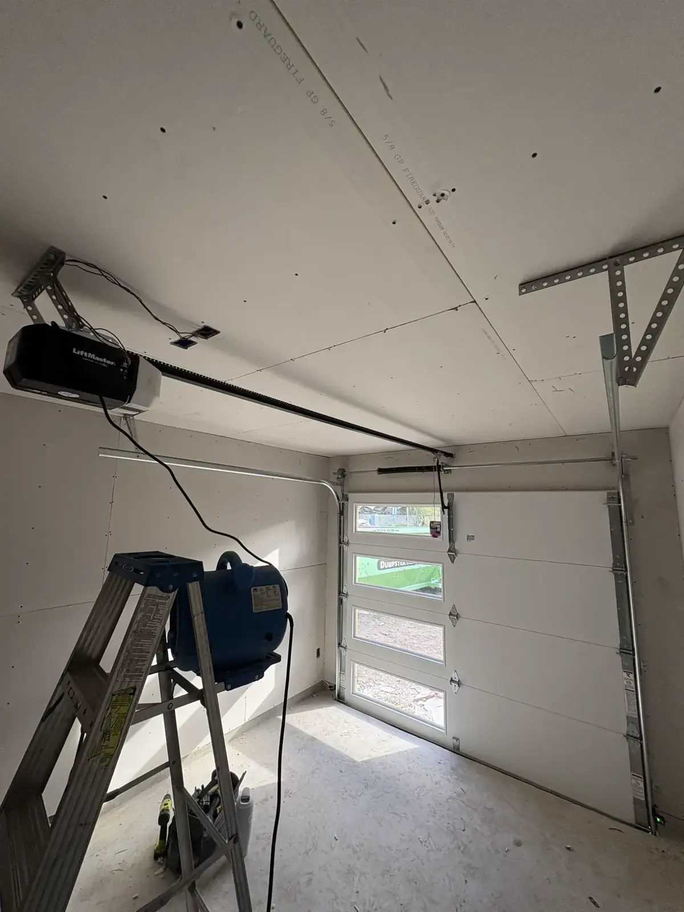

LiftMaster Garage Door Openers in Austin, TX
LiftMaster is one of the brands garage door pros install the most. We install the full line in Austin, take out your old opener, and test everything before we leave.
Who Installs LiftMaster Openers in Austin?
We do. Let's Roll Garage Doors installs LiftMaster openers for homeowners across Austin, from South Austin to Round Rock and Cedar Park. LiftMaster is made by The Chamberlain Group, and it is the brand most of the garage door pros we know put on their own doors.
Why buy from a local installer? Because the opener is only half the job. A good install means the door is balanced, the safety sensors are aimed right, and the force settings are set so the door stops when it should. A local installer does that work, and if something is off next month, we are in Austin and you can call us. Want to see what we do on a repair instead? See our garage door opener repair page.
Why Pick a LiftMaster
There are cheaper openers. Here is why homeowners still ask for LiftMaster.
myQ Smart Control
Open, close and check your door from your phone with the free myQ app. You get an alert if the door is left open. Handy if you ever wonder whether you closed it.
Battery Backup
Many newer LiftMaster models keep working when the power goes out. Austin storms and outages are no reason to be stuck outside your own garage.
Quiet Belt Drives
If your garage shares a wall with a bedroom or has a room above it, a belt drive is the quiet choice. You will barely hear it run.
Built to Last
LiftMaster parts and remotes are easy to find, so a repair years from now is simple. That is a big reason pros like them.
LiftMaster Models We Install
There are three main types. Here is the plain version of each.
Chain Drive
The reliable, affordable one. A steel chain pulls the door. It is a bit louder than a belt, but it is tough and it works. This is our current deal: a LiftMaster chain drive opener (7ft) for $599 installed, parts and installation included. Use code OPENER599. See the current deals page.
Belt Drive
The quiet one. A rubber belt moves the door smoothly. Pick this if the garage is attached to a bedroom, or if there is a room above it. It costs more than a chain drive.
Wall-Mount (Jackshaft)
The space saver. It mounts on the wall next to the door, so there is no rail on the ceiling. Good for high ceilings, garages with storage racks, and side-mount setups.
Which one should I get?
If you want the best price, get the chain drive. If you want the quietest opener, get the belt drive. If you have a high ceiling or no room overhead, the wall-mount is usually the answer. Not sure? Call us. We will look at your garage and tell you straight.
A Recent LiftMaster Install in Austin
In October 2026 we put a LiftMaster 2220L chain drive opener on a brand new door in Mueller. We mounted it, wired it, set the sensors and tested the door before we left.

Want the same kind of opener? Our current deal is a LiftMaster chain drive opener (7ft) for $599 installed, parts and installation included. Use code OPENER599 when you call. It ends November 11, 2026. See the current deals page, or look at the whole job in our gallery.
Buying From a Pro vs Home Depot or Lowe's
Is it cheaper to buy the opener at a big-box store? Sometimes the box is cheaper. But you still have to hang it, wire it, set the limits and sensors, and get the old one off the ceiling. A bad install is how openers burn out early or stop reversing when something is in the way. That is a safety problem, not just an annoyance.
Some LiftMaster models are sold only through professional installers. Warranty terms vary by model, and we go over them with you before we start. On top of that, our workmanship guarantee covers the work we do.
When you hire us, this is what is included:
- Removing and hauling away your old opener
- Mounting the new opener and wiring it
- Setting up the safety sensors
- Programming your remotes, keypad and myQ
- Setting the travel limits and force, then testing the door
How Our Opener Installation Works
We Look at Your Door
We check the door, the springs, the ceiling and the wiring. A good opener on a bad door is wasted money.
We Recommend a Model
Chain, belt or wall-mount. We tell you which one fits and give you the exact price before we start.
Same-Day or Scheduled Install
Many installs can happen the same day. Otherwise we book a time that works for you.
We Program Everything
Remotes, wall button, keypad and the myQ app. We set up the safety sensors and test the auto-reverse.
Walkthrough and Cleanup
We show you how everything works, then clean up and take the old opener with us.
LiftMaster Opener Questions, Answered
How much does a LiftMaster opener cost installed in Austin?
It depends on the model and your door. We quote the exact price before any work starts. Right now our LiftMaster chain drive opener (7ft) is $599 installed with code OPENER599. Belt drive and wall-mount models cost more, and we will give you the number for the one that fits your garage.
How long does a LiftMaster opener installation take?
Most installs take a few hours. If your door has a broken spring or is out of balance, we fix that first so the new opener does not wear out early, and that adds time.
Can you install a LiftMaster on any garage door?
On almost any residential sectional door, yes. The door needs to be in good shape and balanced. Very heavy or custom doors may need a stronger model. We check your door before we quote, so there are no surprises.
What is the difference between a chain drive and a belt drive opener?
A chain drive uses a metal chain. It is tough, affordable and a little louder. A belt drive uses a rubber belt. It costs more and runs much quieter, which matters if the garage is attached to a bedroom or has a room above it.
Is the myQ app free?
Yes, the myQ app is free to download, and basic control from your phone is free. LiftMaster openers with built-in Wi-Fi connect to it directly. Some older openers can connect with a myQ hub.
Do LiftMaster openers have battery backup?
Many newer LiftMaster models do, so the door still opens and closes when the power is out. Not every model has it. Tell us you want it and we will quote a model that does.
More Ways We Can Help
Putting in a new opener with a new door? See our garage door installation page. Door spring broken too? We handle garage door spring repair in Austin. Want the latest deal? Check the current deals page, or head back to the homepage.
Ready for a New Opener?
Call us or send a quote request. We will tell you which LiftMaster fits your garage and give you the price before we start.
Call (512) 947-4451